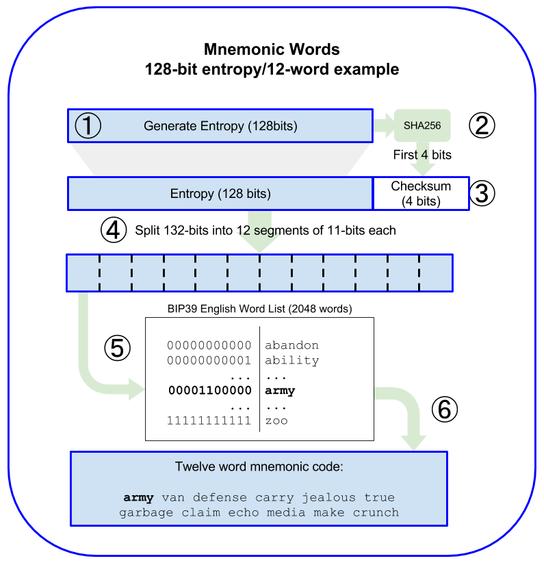
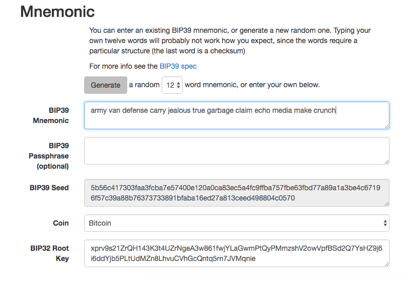

{
"address": "001d3f1ef827552ae1114027bd3ecf1f086ba0f9",
"crypto": {
"cipher": "aes-128-ctr",
"ciphertext":
"233a9f4d236ed0c13394b504b6da5df02587c8bf1ad8946f6f2b58f055507ece",
"cipherparams": {
"iv": "d10c6ec5bae81b6cb9144de81037fa15"
},
"kdf": "scrypt",
"kdfparams": {
"dklen": 32,
"n": 262144,
"p": 1,
"r": 8,
"salt":
"99d37a47c7c9429c66976f643f386a61b78b97f3246adca89abe4245d2788407"
},
"mac": "594c8df1c8ee0ded8255a50caf07e8c12061fd859f4b7c76ab704b17c957e842"
},
"id": "4fcb2ba4-ccdb-424f-89d5-26cce304bf9c",
"version": 3
}Wallets
The word "wallet" is used to describe a few different things in Ethereum.
At a high level, a wallet is a software application that serves as the primary user interface to Ethereum. The wallet controls access to a user’s money, managing keys and addresses, tracking the balance, and creating and signing transactions. In addition, some Ethereum wallets can also interact with contracts, such as ERC20 tokens.
More narrowly, from a programmer’s perspective, the word wallet refers to the system used to store and manage a user’s keys. Every wallet has a key-management component. For some wallets, that’s all there is. Other wallets are part of a much broader category, that of browsers, which are interfaces to Ethereum-based decentralized applications, or DApps, which we will examine in more detail in [decentralized_applications_chap]. There are no clear lines of distinction between the various categories that are conflated under the term wallet.
In this chapter we will look at wallets as containers for private keys, and as systems for managing these keys.
Wallet Technology Overview
In this section we summarize the various technologies used to construct user-friendly, secure, and flexible Ethereum wallets.
One key consideration in designing wallets is balancing convenience and privacy. The most convenient Ethereum wallet is one with a single private key and address that you reuse for everything. Unfortunately, such a solution is a privacy nightmare, as anyone can easily track and correlate all your transactions. Using a new key for every transaction is best for privacy, but becomes very difficult to manage. The correct balance is difficult to achieve, but that’s why good wallet design is paramount.
A common misconception about Ethereum is that Ethereum wallets contain ether or tokens. In fact, very strictly speaking, the wallet holds only keys. The ether or other tokens are recorded on the Ethereum blockchain. Users control the tokens on the network by signing transactions with the keys in their wallets. In a sense, an Ethereum wallet is a keychain. Having said that, given that the keys held by the wallet are the only things that are needed to transfer ether or tokens to others, in practice this distinction is fairly irrelevant. Where the difference does matter is in changing one’s mindset from dealing with the centralized system of conventional banking (where only you, and the bank, can see the money in your account, and you only need convince the bank that you want to move funds to make a transaction) to the decentralized system of blockchain platforms (where everyone can see the ether balance of an account, although they probably don’t know the account’s owner, and everyone needs to be convinced the owner wants to move funds for a transaction to be enacted). In practice this means that there is an independent way to check an account’s balance, without needing its wallet. Moreover, you can move your account handling from your current wallet to a different wallet, if you grow to dislike the wallet app you started out using.
|
Note
|
Ethereum wallets contain keys, not ether or tokens. Wallets are like keychains containing pairs of private and public keys. Users sign transactions with the private keys, thereby proving they own the ether. The ether is stored on the blockchain. |
There are two primary types of wallets, distinguished by whether the keys they contain are related to each other or not.
The first type is a nondeterministic wallet, where each key is independently generated from a different random number. The keys are not related to each other. This type of wallet is also known as a JBOK wallet, from the phrase "Just a Bunch of Keys.”
The second type of wallet is a deterministic wallet, where all the keys are derived from a single master key, known as the seed. All the keys in this type of wallet are related to each other and can be generated again if one has the original seed. There are a number of different key derivation methods used in deterministic wallets. The most commonly used derivation method uses a tree-like structure, as described in Hierarchical Deterministic Wallets (BIP-32/BIP-44).
To make deterministic wallets slightly more secure against data-loss accidents, such as having your phone stolen or dropping it in the toilet, the seeds are often encoded as a list of words (in English or another language) for you to write down and use in the event of an accident. These are known as the wallet’s mnemonic code words. Of course, if someone gets hold of your mnemonic code words, then they can also recreate your wallet and thus gain access to your ether and smart contracts. As such, be very, very careful with your recovery word list! Never store it electronically, in a file, on your computer or phone. Write it down on paper and store it in a safe and secure place.
The next few sections introduce each of these technologies at a high level.
Nondeterministic (Random) Wallets
In the first Ethereum wallet (produced for the Ethereum pre-sale), each wallet file stored a single randomly generated private key. Such wallets are being replaced with deterministic wallets because these "old-style" wallets are in many ways inferior. For example, it is considered good practice to avoid Ethereum address reuse as part of maximizing your privacy while using Ethereum—i.e., to use a new address (which needs a new private key) every time you receive funds. You can go further and use a new address for each transaction, although this can get expensive if you deal a lot with tokens. To follow this practice, a nondeterministic wallet will need to regularly increase its list of keys, which means you will need to make regular backups. If you ever lose your data (disk failure, drink accident, phone stolen) before you’ve managed to back up your wallet, you will lose access to your funds and smart contracts. The "type 0" nondeterministic wallets are the hardest to deal with, because they create a new wallet file for every new address in a "just in time" manner.
Nevertheless, many Ethereum clients (including geth) use a keystore file, which is a JSON-encoded file that contains a single (randomly generated) private key, encrypted by a passphrase for extra security. The JSON file’s contents look like this:
The keystore format uses a key derivation function (KDF), also known as a password stretching algorithm, which protects against brute-force, dictionary, and rainbow table attacks. In simple terms, the private key is not encrypted by the passphrase directly. Instead, the passphrase is stretched, by repeatedly hashing it. The hashing function is repeated for 262,144 rounds, which can be seen in the keystore JSON as the parameter crypto.kdfparams.n. An attacker trying to brute-force the passphrase would have to apply 262,144 rounds of hashing for every attempted passphrase, which slows down the attack sufficiently to make it infeasible for passphrases of sufficient complexity and length.
There are a number of software libraries that can read and write the keystore format, such as the JavaScript library keythereum.
|
Tip
|
The use of nondeterministic wallets is discouraged for anything other than simple tests. They are too cumbersome to back up and use for anything but the most basic of situations. Instead, use an industry-standard–based HD wallet with a mnemonic seed for backup. |
Deterministic (Seeded) Wallets
Deterministic or "seeded" wallets are wallets that contain private keys that are all derived from a single master key, or seed. The seed is a randomly generated number that is combined with other data, such as an index number or "chain code" (see Extended public and private keys), to derive any number of private keys. In a deterministic wallet, the seed is sufficient to recover all the derived keys, and therefore a single backup, at creation time, is sufficient to secure all the funds and smart contracts in the wallet. The seed is also sufficient for a wallet export or import, allowing for easy migration of all the keys between different wallet implementations.
This design makes the security of the seed of utmost importance, as only the seed is needed to gain access to the entire wallet. On the other hand, being able to focus security efforts on a single piece of data can be seen as an advantage.
Hierarchical Deterministic Wallets (BIP-32/BIP-44)
Deterministic wallets were developed to make it easy to derive many keys from a single seed. Currently, the most advanced form of deterministic wallet is the hierarchical deterministic (HD) wallet defined by Bitcoin’s BIP-32 standard. HD wallets contain keys derived in a tree structure, such that a parent key can derive a sequence of child keys, each of which can derive a sequence of grandchild keys, and so on. This tree structure is illustrated in HD wallet: a tree of keys generated from a single seed.
Figure 1. HD wallet: a tree of keys generated from a single seed
HD wallets offer a few key advantages over simpler deterministic wallets. First, the tree structure can be used to express additional organizational meaning, such as when a specific branch of subkeys is used to receive incoming payments and a different branch is used to receive change from outgoing payments. Branches of keys can also be used in corporate settings, allocating different branches to departments, subsidiaries, specific functions, or accounting categories.
The second advantage of HD wallets is that users can create a sequence of public keys without having access to the corresponding private keys. This allows HD wallets to be used on an insecure server or in a watch-only or receive-only capacity, where the wallet doesn’t have the private keys that can spend the funds.
Seeds and Mnemonic Codes (BIP-39)
There are many ways to encode a private key for secure backup and retrieval. The currently preferred method is using a sequence of words that, when taken together in the correct order, can uniquely recreate the private key. This is sometimes known as a mnemonic, and the approach has been standardized by BIP-39. Today, many Ethereum wallets (as well as wallets for other cryptocurrencies) use this standard, and can import and export seeds for backup and recovery using interoperable mnemonics.
To see why this approach has become popular, let’s have a look at an example:
A seed for a deterministic wallet, in hex
FCCF1AB3329FD5DA3DA9577511F8F137
A seed for a deterministic wallet, from a 12-word mnemonic
wolf juice proud gown wool unfair wall cliff insect more detail hub
In practical terms, the chance of an error when writing down the hex sequence is unacceptably high. In contrast, the list of known words is quite easy to deal with, mainly because there is a high level of redundancy in the writing of words (especially English words). If "inzect" had been recorded by accident, it could quickly be determined, upon the need for wallet recovery, that "inzect" is not a valid English word and that "insect" should be used instead. We are talking about writing down a representation of the seed because that is good practice when managing HD wallets: the seed is needed to recover a wallet in the case of data loss (whether through accident or theft), so keeping a backup is very prudent. However, the seed must be kept extremely private, so digital backups should be carefully avoided; hence the earlier advice to back up with pen and paper.
In summary, the use of a recovery word list to encode the seed for an HD wallet makes for the easiest way to safely export, transcribe, record on paper, read without error, and import a private key set into another wallet.
Wallet Best Practices
As cryptocurrency wallet technology has matured, certain common industry standards have emerged that make wallets broadly interoperable, easy to use, secure, and flexible. These standards also allow wallets to derive keys for multiple different cryptocurrencies, all from a single mnemonic. These common standards are:
-
Mnemonic code words, based on BIP-39
-
HD wallets, based on BIP-32
-
Multipurpose HD wallet structure, based on BIP-43
-
Multicurrency and multiaccount wallets, based on BIP-44
These standards may change or be obsoleted by future developments, but for now they form a set of interlocking technologies that have become the de facto wallet standard for most blockchain platforms and their cryptocurrencies.
The standards have been adopted by a broad range of software and hardware wallets, making all these wallets interoperable. A user can export a mnemonic generated in one of these wallets and import it to another wallet, recovering all keys and addresses.
Some examples of software wallets supporting these standards include (listed alphabetically) Jaxx, MetaMask, MyCrypto, and MyEtherWallet (MEW). Examples of hardware wallets supporting these standards include Keepkey, Ledger, and Trezor.
The following sections examine each of these technologies in detail.
|
Tip
|
If you are implementing an Ethereum wallet, it should be built as an HD wallet, with a seed encoded as a mnemonic code for backup, following the BIP-32, BIP-39, BIP-43, and BIP-44 standards, as described in the following sections. |
Mnemonic Code Words (BIP-39)
Mnemonic code words are word sequences that encode a random number used as a seed to derive a deterministic wallet. The sequence of words is sufficient to recreate the seed, and from there recreate the wallet and all the derived keys. A wallet application that implements deterministic wallets with mnemonic words will show the user a sequence of 12 to 24 words when first creating a wallet. That sequence of words is the wallet backup, and can be used to recover and recreate all the keys in the same or any compatible wallet application. As we explained earlier, mnemonic word lists make it easier for users to back up wallets, because they are easy to read and correctly transcribe.
|
Note
|
Mnemonic words are often confused with "brainwallets." They are not the same. The primary difference is that a brainwallet consists of words chosen by the user, whereas mnemonic words are created randomly by the wallet and presented to the user. This important difference makes mnemonic words much more secure, because humans are very poor sources of randomness. Perhaps more importantly, using the term "brainwallet" suggests that the words have to be memorized, which is a terrible idea, and a recipe for not having your backup when you need it. |
Mnemonic codes are defined in BIP-39. Note that BIP-39 is one implementation of a mnemonic code standard. There is a different standard, with a different set of words, used by the Electrum Bitcoin wallet and predating BIP-39. BIP-39 was proposed by the company behind the Trezor hardware wallet and is incompatible with Electrum’s implementation. However, BIP-39 has now achieved broad industry support across dozens of interoperable implementations and should be considered the de facto industry standard. Furthermore, BIP-39 can be used to produce multicurrency wallets supporting Ethereum, whereas Electrum seeds cannot.
BIP-39 defines the creation of a mnemonic code and seed, which we describe here in nine steps. For clarity, the process is split into two parts: steps 1 through 6 are shown in Generating mnemonic words and steps 7 through 9 are shown in From mnemonic to seed.
Generating mnemonic words
Mnemonic words are generated automatically by the wallet using the standardized process defined in BIP-39. The wallet starts from a source of entropy, adds a checksum, and then maps the entropy to a word list:
-
Create a cryptographically random sequence S of 128 to 256 bits.
-
Create a checksum of S by taking the first length-of-S ÷ 32 bits of the SHA-256 hash of S.
-
Add the checksum to the end of the random sequence S.
-
Divide the sequence-and-checksum concatenation into sections of 11 bits.
-
Map each 11-bit value to a word from the predefined dictionary of 2,048 words.
-
Create the mnemonic code from the sequence of words, maintaining the order.
Generating entropy and encoding as mnemonic words shows how entropy is used to generate mnemonic words.
Mnemonic codes: entropy and word length shows the relationship between the size of the entropy data and the length of mnemonic codes in words.
| Entropy (bits) | Checksum (bits) | Entropy + checksum (bits) | Mnemonic length (words) |
|---|---|---|---|
128 |
4 |
132 |
12 |
160 |
5 |
165 |
15 |
192 |
6 |
198 |
18 |
224 |
7 |
231 |
21 |
256 |
8 |
264 |
24 |

Figure 2. Generating entropy and encoding as mnemonic words
From mnemonic to seed
The mnemonic words represent entropy with a length of 128 to 256 bits. The entropy is then used to derive a longer (512-bit) seed through the use of the key-stretching function PBKDF2. The seed produced is used to build a deterministic wallet and derive its keys.
The key-stretching function takes two parameters: the mnemonic and a salt. The purpose of a salt in a key-stretching function is to make it difficult to build a lookup table enabling a brute-force attack. In the BIP-39 standard, the salt has another purpose: it allows the introduction of a passphrase that serves as an additional security factor protecting the seed, as we will describe in more detail in Optional passphrase in BIP-39.
The process described in steps 7 through 9 continues from the process described in the previous section:
-
The first parameter to the PBKDF2 key-stretching function is the mnemonic produced in step 6.
-
The second parameter to the PBKDF2 key-stretching function is a salt. The salt is composed of the string constant "mnemonic" concatenated with an optional user-supplied passphrase.
-
PBKDF2 stretches the mnemonic and salt parameters using 2,048 rounds of hashing with the HMAC-SHA512 algorithm, producing a 512-bit value as its final output. That 512-bit value is the seed.
From mnemonic to seed shows how a mnemonic is used to generate a seed.

Figure 3. From mnemonic to seed
|
Note
|
The key-stretching function, with its 2,048 rounds of hashing, is a somewhat effective protection against brute-force attacks against the mnemonic or the passphrase. It makes it costly (in computation) to try more than a few thousand passphrase and mnemonic combinations, while the number of possible derived seeds is vast (2512, or about 10154)—far bigger than the number of atoms in the visible universe (about 1080). |
Tables #mnemonic_128_no_pass, #mnemonic_128_w_pass, and #mnemonic_256_no_pass show some examples of mnemonic codes and the seeds they produce.
Entropy input (128 bits) |
0c1e24e5917779d297e14d45f14e1a1a |
|---|---|
Mnemonic (12 words) |
army van defense carry jealous true garbage claim echo media make crunch |
Passphrase |
(none) |
Seed (512 bits) |
5b56c417303faa3fcba7e57400e120a0ca83ec5a4fc9ffba757fbe63fbd77a89a1a3be4c67196f57c39 a88b76373733891bfaba16ed27a813ceed498804c0570 |
Entropy input (128 bits) |
0c1e24e5917779d297e14d45f14e1a1a |
|---|---|
Mnemonic (12 words) |
army van defense carry jealous true garbage claim echo media make crunch |
Passphrase |
SuperDuperSecret |
Seed (512 bits) |
3b5df16df2157104cfdd22830162a5e170c0161653e3afe6c88defeefb0818c793dbb28ab3ab091897d0 715861dc8a18358f80b79d49acf64142ae57037d1d54 |
Entropy input (256 bits) |
2041546864449caff939d32d574753fe684d3c947c3346713dd8423e74abcf8c |
|---|---|
Mnemonic (24 words) |
cake apple borrow silk endorse fitness top denial coil riot stay wolf luggage oxygen faint major edit measure invite love trap field dilemma oblige |
Passphrase |
(none) |
Seed (512 bits) |
3269bce2674acbd188d4f120072b13b088a0ecf87c6e4cae41657a0bb78f5315b33b3a04356e53d062e5 5f1e0deaa082df8d487381379df848a6ad7e98798404 |
Optional passphrase in BIP-39
The BIP-39 standard allows the use of an optional passphrase in the derivation of the seed. If no passphrase is used, the mnemonic is stretched with a salt consisting of the constant string "mnemonic", producing a specific 512-bit seed from any given mnemonic. If a passphrase is used, the stretching function produces a different seed from that same mnemonic. In fact, given a single mnemonic, every possible passphrase leads to a different seed. Essentially, there is no "wrong" passphrase. All passphrases are valid and they all lead to different seeds, forming a vast set of possible uninitialized wallets. The set of possible wallets is so large (2512) that there is no practical possibility of brute-forcing or accidentally guessing one that is in use, as long as the passphrase has sufficient complexity and length.
|
Tip
|
There are no "wrong" passphrases in BIP-39. Every passphrase leads to some wallet, which unless previously used will be empty. |
The optional passphrase creates two important features:
-
A second factor (something memorized) that makes a mnemonic useless on its own, protecting mnemonic backups from compromise by a thief.
-
A form of plausible deniability or "duress wallet," where a chosen passphrase leads to a wallet with a small amount of funds, used to distract an attacker from the "real" wallet that contains the majority of funds.
However, it is important to note that the use of a passphrase also introduces the risk of loss:
-
If the wallet owner is incapacitated or dead and no one else knows the passphrase, the seed is useless and all the funds stored in the wallet are lost forever.
-
Conversely, if the owner backs up the passphrase in the same place as the seed, it defeats the purpose of a second factor.
While passphrases are very useful, they should only be used in combination with a carefully planned process for backup and recovery, considering the possibility of heirs surviving the owner being able to recover the cryptocurrency.
Working with mnemonic codes
BIP-39 is implemented as a library in many different programming languages. For example:
- python-mnemonic
-
The reference implementation of the standard by the SatoshiLabs team that proposed BIP-39, in Python
- ConsenSys/eth-lightwallet
-
Lightweight JS Ethereum wallet for nodes and browser (with BIP-39)
- npm/bip39
-
JavaScript implementation of Bitcoin BIP-39: Mnemonic code for generating deterministic keys
There is also a BIP-39 generator implemented in a standalone web page (A BIP-39 generator as a standalone web page), which is extremely useful for testing and experimentation. The Mnemonic Code Converter generates mnemonics, seeds, and extended private keys. It can be used offline in a browser, or accessed online.

Figure 4. A BIP-39 generator as a standalone web page
Creating an HD Wallet from the Seed
HD wallets are created from a single root seed, which is a 128-, 256-, or 512-bit random number. Most commonly, this seed is generated from a mnemonic as detailed in the previous section.
Every key in the HD wallet is deterministically derived from this root seed, which makes it possible to recreate the entire HD wallet from that seed in any compatible HD wallet. This makes it easy to export, back up, restore, and import HD wallets containing thousands or even millions of keys by transferring just the mnemonic from which the root seed is derived.
HD Wallets (BIP-32) and Paths (BIP-43/44)
Most HD wallets follow the BIP-32 standard, which has become a de facto industry standard for deterministic key generation.
We won’t be discussing all the details of BIP-32 here, only the components necessary to understand how it is used in wallets. The main important aspect is the tree-like hierarchical relationships that it is possible for the derived keys to have, as you can see in HD wallet: a tree of keys generated from a single seed. It’s also important to understand the ideas of extended keys and hardened keys, which are explained in the following sections.
There are dozens of interoperable implementations of BIP-32 offered in many software libraries. These are mostly designed for Bitcoin wallets, which implement addresses in a different way, but share the same key-derivation implementation as Ethereum’s BIP-32-compatible wallets. Use one designed for Ethereum, or adapt one from Bitcoin by adding an Ethereum address encoding library.
There is also a BIP-32 generator implemented as a standalone web page that is very useful for testing and experimentation with BIP-32.
|
Warning
|
The standalone BIP-32 generator is not an HTTPS site. That’s to remind you that the use of this tool is not secure. It is only for testing. You should not use the keys produced by this site with real funds. |
Extended public and private keys
In BIP-32 terminology, keys can be "extended.” With the right mathematical operations, these extended "parent" keys can be used to derive "child" keys, thus producing the hierarchy of keys and addresses described earlier. A parent key doesn’t have to be at the top of the tree. It can be picked out from anywhere in the tree hierarchy. Extending a key involves taking the key itself and appending a special chain code to it. A chain code is a 256-bit binary string that is mixed with each key to produce child keys.
If the key is a private key, it becomes an extended private key distinguished by the prefix xprv:
xprv9s21ZrQH143K2JF8RafpqtKiTbsbaxEeUaMnNHsm5o6wCW3z8ySyH4UxFVSfZ8n7ESu7fgir8i...
An extended public key is distinguished by the prefix xpub:
xpub661MyMwAqRbcEnKbXcCqD2GT1di5zQxVqoHPAgHNe8dv5JP8gWmDproS6kFHJnLZd23tWevhdn...
A very useful characteristic of HD wallets is the ability to derive child public keys from parent public keys, without having the private keys. This gives us two ways to derive a child public key: either directly from the child private key, or from the parent public key.
An extended public key can be used, therefore, to derive all of the public keys (and only the public keys) in that branch of the HD wallet structure.
This shortcut can be used to create very secure public key–only deployments, where a server or application has a copy of an extended public key, but no private keys whatsoever. That kind of deployment can produce an infinite number of public keys and Ethereum addresses, but cannot spend any of the money sent to those addresses. Meanwhile, on another, more secure server, the extended private key can derive all the corresponding private keys to sign transactions and spend the money.
One common application of this method is to install an extended public key on a web server that serves an ecommerce application. The web server can use the public key derivation function to create a new Ethereum address for every transaction (e.g., for a customer shopping cart), and will not have any private keys that would be vulnerable to theft. Without HD wallets, the only way to do this is to generate thousands of Ethereum addresses on a separate secure server and then preload them on the ecommerce server. That approach is cumbersome and requires constant maintenance to ensure that the server doesn’t run out of keys, hence the preference to use extended public keys from HD wallets.
Another common application of this solution is for cold-storage or hardware wallets. In that scenario, the extended private key can be stored in a hardware wallet, while the extended public key can be kept online. The user can create "receive" addresses at will, while the private keys are safely stored offline. To spend the funds, the user can use the extended private key in an offline signing Ethereum client, or sign transactions on the hardware wallet device.
Hardened child key derivation
The ability to derive a branch of public keys from an extended public key, or xpub, is very useful, but it comes with a potential risk. Access to an xpub does not give access to child private keys. However, because the xpub contains the chain code (used to derive child public keys from the parent public key), if a child private key is known, or somehow leaked, it can be used with the chain code to derive all the other child private keys. A single leaked child private key, together with a parent chain code, reveals all the private keys of all the children. Worse, the child private key together with a parent chain code can be used to deduce the parent private key.
To counter this risk, HD wallets use an alternative derivation function called hardened derivation, which "breaks" the relationship between parent public key and child chain code. The hardened derivation function uses the parent private key to derive the child chain code, instead of the parent public key. This creates a "firewall" in the parent/child sequence, with a chain code that cannot be used to compromise a parent or sibling private key.
In simple terms, if you want to use the convenience of an xpub to derive branches of public keys without exposing yourself to the risk of a leaked chain code, you should derive it from a hardened parent, rather than a normal parent. Best practice is to have the level-1 children of the master keys always derived by hardened derivation, to prevent compromise of the master keys.
Index numbers for normal and hardened derivation
It is clearly desirable to be able to derive more than one child key from a given parent key. To manage this, an index number is used. Each index number, when combined with a parent key using the special child derivation function, gives a different child key. The index number used in the BIP-32 parent-to-child derivation function is a 32-bit integer. To easily distinguish between keys derived through the normal (unhardened) derivation function versus keys derived through hardened derivation, this index number is split into two ranges. Index numbers between 0 and 231–1 (0x0 to 0x7FFFFFFF) are used only for normal derivation. Index numbers between 231 and 232–1 (0x80000000 to 0xFFFFFFFF) are used only for hardened derivation. Therefore, if the index number is less than 231, the child is normal, whereas if the index number is equal to or above 231, the child is hardened.
To make the index numbers easier to read and display, the index numbers for hardened children are displayed starting from zero, but with a prime symbol. The first normal child key is therefore displayed as 0, whereas the first hardened child (index 0x80000000) is displayed as 0'. In sequence, then, the second hardened key would have index of 0x80000001 and would be displayed as 1', and so on. When you see an HD wallet index i', that means 231 + i.
HD wallet key identifier (path)
Keys in an HD wallet are identified using a "path" naming convention, with each level of the tree separated by a slash (/) character (see HD wallet path examples). Private keys derived from the master private key start with m. Public keys derived from the master public key start with M. Therefore, the first child private key of the master private key is m/0. The first child public key is M/0. The second grandchild of the first child is m/0/1, and so on.
The "ancestry" of a key is read from right to left, until you reach the master key from which it was derived. For example, identifier m/x/y/z describes the key that is the z-th child of key m/x/y, which is the y-th child of key m/x, which is the x-th child of m.
| HD path | Key described |
|---|---|
m/0 |
The first (0) child private key of the master private key (m) |
m/0/0 |
The first grandchild private key of the first child (m/0) |
m/0'/0 |
The first normal grandchild of the first hardened child (m/0') |
m/1/0 |
The first grandchild private key of the second child (m/1) |
M/23/17/0/0 |
The first great-great-grandchild public key of the first great-grandchild of the 18th grandchild of the 24th child |
Navigating the HD wallet tree structure
The HD wallet tree structure is tremendously flexible. The flip side of this is that it also allows for unbounded complexity: each parent extended key can have 4 billion children: 2 billion normal children and 2 billion hardened children. Each of those children can have another 4 billion children, and so on. The tree can be as deep as you want, with a potentially infinite number of generations. With all that potential, it can become quite difficult to navigate these very large trees.
Two BIPs offer a way to manage this potential complexity by creating standards for the structure of HD wallet trees. BIP-43 proposes the use of the first hardened child index as a special identifier that signifies the "purpose" of the tree structure. Based on BIP-43, an HD wallet should use only one level-1 branch of the tree, with the index number defining the purpose of the wallet by identifying the structure and namespace of the rest of the tree. More specifically, an HD wallet using only branch m/i'/... is intended to signify a specific purpose and that purpose is identified by index number i.
Extending that specification, BIP-44 proposes a multicurrency multiaccount structure signified by setting the "purpose" number to 44'. All HD wallets following the BIP-44 structure are identified by the fact that they only use one branch of the tree: m/44'/*.
BIP-44 specifies the structure as consisting of five predefined tree levels:
m / purpose' / coin_type' / account' / change / address_index
The first level, purpose', is always set to 44'. The second level, coin_type', specifies the type of cryptocurrency coin, allowing for multicurrency HD wallets where each currency has its own subtree under the second level. There are several currencies defined in a standards document called SLIP0044; for example, Ethereum is m/44'/60', Ethereum Classic is m/44'/61', Bitcoin is m/44'/0', and Testnet for all currencies is m/44'/1'.
The third level of the tree is account', which allows users to subdivide their wallets into separate logical subaccounts for accounting or organizational purposes. For example, an HD wallet might contain two Ethereum "accounts": m/44'/60'/0' and m/44'/60'/1'. Each account is the root of its own subtree.
Because BIP-44 was created originally for Bitcoin, it contains a "quirk" that isn’t relevant in the Ethereum world. On the fourth level of the path, change, an HD wallet has two subtrees: one for creating receiving addresses and one for creating change addresses. Only the "receive" path is used in Ethereum, as there is no necessity for a change address like there is in Bitcoin. Note that whereas the previous levels used hardened derivation, this level uses normal derivation. This is to allow the account level of the tree to export extended public keys for use in a nonsecured environment. Usable addresses are derived by the HD wallet as children of the fourth level, making the fifth level of the tree the address_index. For example, the third receiving address for Ethereum payments in the primary account would be M/44'/60'/0'/0/2. BIP-44 HD wallet structure examples shows a few more examples.
| HD path | Key described |
|---|---|
M/44'/60'/0'/0/2 |
The third receiving public key for the primary Ethereum account |
M/44'/0'/3'/1/14 |
The 15th change-address public key for the 4th Bitcoin account |
m/44'/2'/0'/0/1 |
The second private key in the Litecoin main account, for signing transactions |
Conclusions
Wallets are the foundation of any user-facing blockchain application. They allow users to manage collections of keys and addresses. Wallets also allow users to demonstrate their ownership of ether, and authorize transactions, by applying digital signatures, as we will see in [tx_chapter].